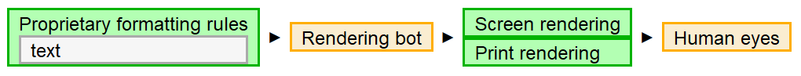

Let's start with the familiar. Imagine building a spreadsheet with only three columns: bold, italic, and underline? How would you make sense of anything?
Word processing (WP) is an approach to documents that is firmly planted in the world of paper. It started by managing whitespace and adding a few visual formatting tricks to replace typewriters. Apple dramatically focused attention on defining the document in terms of its visual characteristics when it introduced the Macintosh, with synchronized bitmapped displays and printers.
We're still largely at that stage, where the bulk of the world's documentation is encoded in proprietary formats that concern themselves mostly with visual formatting of information on physical and virtual pages. Even when the files are encoded using marked-up text, the metadata and other metaknowledge artifacts store mostly visual properties.
WP's visual orientation is problematic. It really requires humans to be in the loop to look, see, recognize, interpret, synthesize with other understandings to apply missing implicit knowledge, decide, and act.
Figure 5. Word processing
|  |
The visual metaphors also limit the ability of computers to both mediate human-to-human communications and also to participate in the conversation. Even the XML-based word processing encodings are rats nests of difficult-to-process markup. The noise of visual parameters swamps the signal of individual characters. Doable, but expensive.
And this is the bottom line of why WP is obsolete technology. It's just too expensive. Labor costs are too high, in large part because you can't build happy little bots to automate anything. You have to buy bots or hire someone to build big grumpy bots.
WP provides flexibility to easily tune appearance, but reuse? Global imperatives require fine-grained, context-sensitive documentation to drive intelligent behavior. That means automation. That means containers. Sure, you can move files, but you can't move fine-grained information in and out of narrative documents. WP data is, to quote someone I met at a non-destructive nuclear assay conference, “just too stupid to move.”
And this isn't the way that the big dogs roll. The publishing industry started walking away from this technology, decades ago.